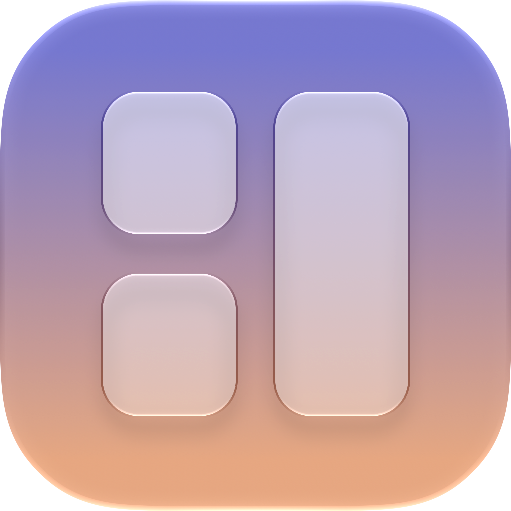

Homelume
Getting started
Homelume shows the rooms, accessories and scenes you set up in the Home app. On first launch, a short presentation explains what the access to your home is for; tap Continue, then allow it when iOS asks. With no home, or if access is denied, a sample home marked “Demo” lets you try everything.
Gestures
- Tap a tile: its action (lights on or off, run a scene, play or pause). Long press: its details.
- Rearrange the screen: hold two fingers on it. Tiles wiggle; drag them, tap one for its settings, or add one from the gallery.
- Settings: “Settings” in the bar of the edit mode, or a long press on the idle clock.
On the wall
On an iPad, the screen stays on while the app is open; on an iPhone, while it charges. Plug the device into power. To keep it on Homelume, the app’s Settings › Screen › Guided Access explains, step by step, how to turn on Guided Access; in its Session Settings, the app’s own switch keeps its settings and edit mode for you.
Weather and music
The Weather tile shows the city you choose (by name, or from the position of the device when you ask for it), with data from Apple Weather. The Music tile follows the Music app on this iPad or iPhone; the AirPlay button sends the sound to a speaker.
A question, a problem?
Write to support@ghnassia.com. We usually answer within a few days.
Purchases and refunds are handled by Apple: reportaproblem.apple.com.
Legal notice
Publisher: Gabriel Ghnassia. Address: . Email: support@ghnassia.com.
Hosting: GitHub, Inc., 88 Colin P. Kelly Jr. Street, San Francisco, CA 94107, USA.
Mettre en route
Homelume affiche les pièces, accessoires et scénarios configurés dans l’app Maison. Au premier lancement, une courte présentation explique à quoi sert l’accès à votre maison ; touchez Continuer, puis autorisez-le quand iOS le demande. Sans maison, ou si l’accès est refusé, une maison d’exemple signalée « Démo » permet de tout essayer.
Les gestes
- Toucher une tuile : son action (allumer ou éteindre, lancer un scénario, lecture ou pause). Appui long : son détail.
- Réorganiser l’écran : maintenez deux doigts dessus. Les tuiles oscillent ; faites-les glisser, touchez-en une pour ses réglages, ou ajoutez-en depuis la galerie.
- Réglages : « Réglages » dans la barre du mode édition, ou appui long sur l’horloge de veille.
Au mur
Sur iPad, l’écran reste allumé tant que l’app est ouverte ; sur iPhone, tant qu’il est en charge. Branchez l’appareil sur secteur. Pour le garder sur Homelume, Réglages › Écran › Accès guidé, dans l’app, explique pas à pas comment activer l’Accès guidé ; dans ses Réglages de session, l’interrupteur de l’app vous réserve ses réglages et le mode édition.
Météo et musique
La tuile Météo affiche la ville choisie (par son nom, ou d’après la position de l’appareil quand vous la demandez), avec les données de Météo Apple. La tuile Musique suit l’app Musique de cet iPad ou de cet iPhone ; le bouton AirPlay envoie le son vers une enceinte.
Une question, un problème ?
Écrivez à support@ghnassia.com. Réponse en général sous quelques jours.
Les achats et les remboursements sont gérés par Apple : reportaproblem.apple.com.
Mentions légales
Éditeur : Gabriel Ghnassia. Adresse : . E-mail : support@ghnassia.com.
Hébergement : GitHub, Inc., 88 Colin P. Kelly Jr. Street, San Francisco, CA 94107, États-Unis.